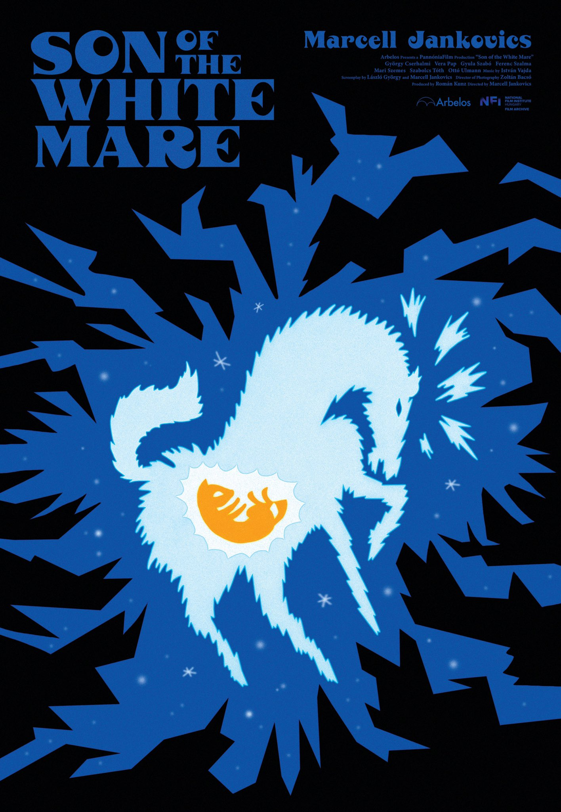
Son of the White Mare
1981
Looking like nothing else, the beautiful animation is the highlight of this film
inspired by Hungarian folk stories. A young man goes on a quest to the underworld
to restore a lost kingdom.
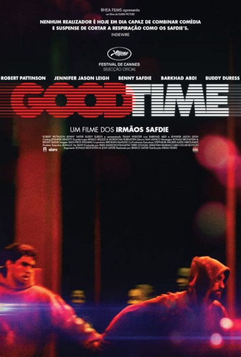
Good Time
2017
Showcasing humanity in all of it's messy glory, Good Time is a 24 hour odyssey
where Connie, played by Robert Pattinson, is on a quest to find $10,000 to help
his brother. Almost immediately everything goes wrong. In this journey
with Connie we glimpses into the lives of complex characters he meets
along the way.
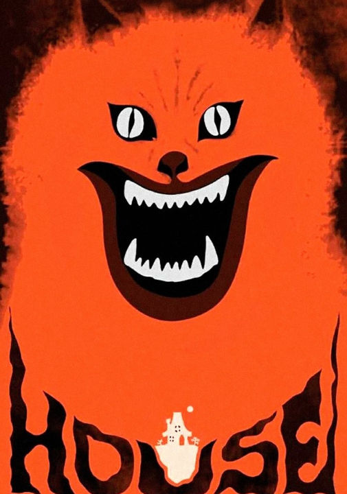
House
1977
This Japanese comedy horror is a strong contender for being the most chaotic film
ever (also for the best poster ever). A young school girl and her friends travel
to her aunt's remote house over the holidays, only to face supernatural danger within.
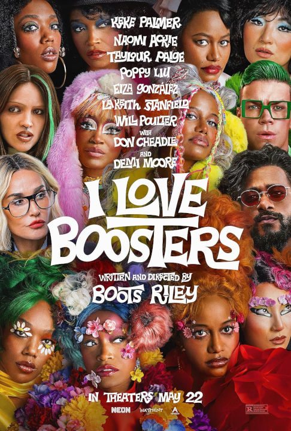
I Love Boosters
2026
A ragtag team of boosters pull out all the tricks to cause as much damage as they can to the head
of a fashion empire. It is a chaotic and messy romp through a rainbow capitalist hellscape that
unsubtly turns into a manifesto for collect action.
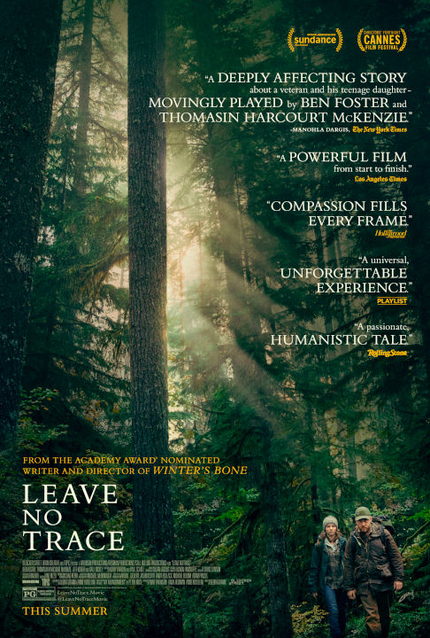
Leave No Trace
2018
A patient and moving film that follows a young girl brought up by her father who lives secretly
in a national park. Thomasin McKenzie gives a remarkable performance opposite Ben Foster, the
characters they play know each other so well they barely have the need to talk.

Legends of the Guardians
2010
Soren, a young owl, discovers themself in the middle of a conspiracy that threatens everyone.
Their only hope is the mythical owl warriors of Ga'Hool. This visually impressive kids film is
well paced with interesting and entertaining characters.
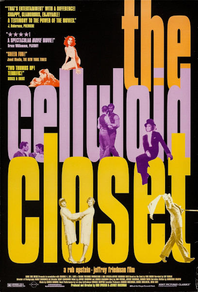
the Celluloid Closet
1995
An in depth look at the portrayals of Gays and Lesbians in film during the first century of
the medium. It maps the changes in representation and how they reflected changing societal
attitudes, as well as the impacts these depictions had on queer people.
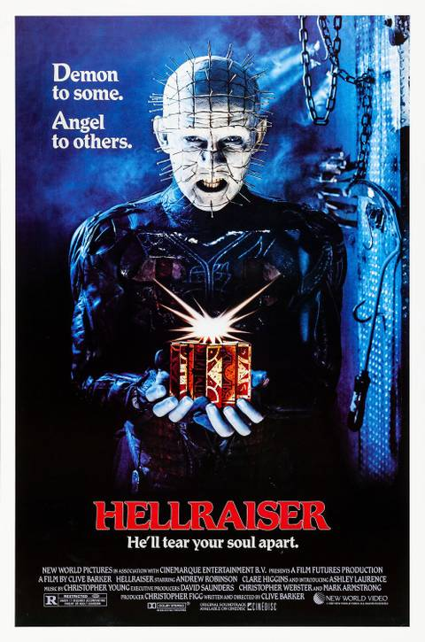
Hellraiser
1987
Nearly 40 years later, Hellraiser still manages to be staggeringly brutal in moments of
nightmarish violence. Though most of the runtime is far more modest, using the psycho-dramas
and dark temptations of it's characters as the driving force. It is strikingly different
compared to 80s slashers from it's time.
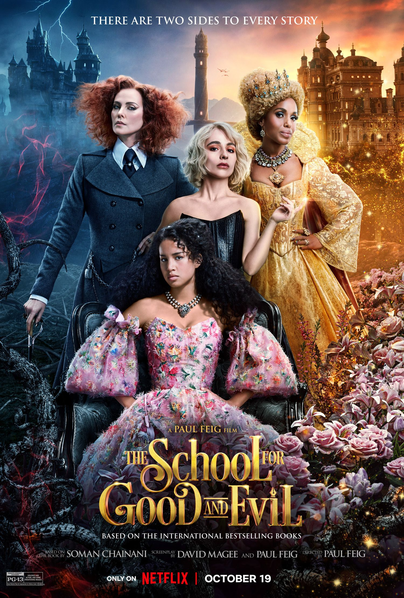
the School for Good and Evil
2022
An unsubtle romp that manages to be entertaining throughout it's extravagant run
time. Best friends Sophie and Agatha are taken from their home and separated
between the competing schools of Good and Evil. A heavy dose of big budget gloss
occasionally conflicts with themes of looking deeper than the surface.
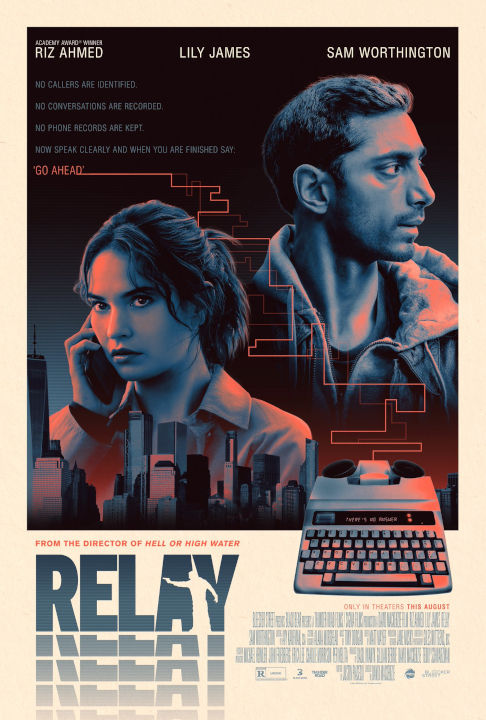
Relay
2024
What begins as generic spy action, love interest included, grows into something
unique and nuanced. Touching on themes of community and personal responsibility.
The spy craft is a thrilling and mostly bloodless game of cat and mouse, where
violence hangs above the characters as threat.
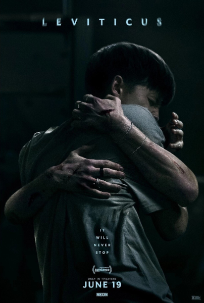
Leviticus
2026
With a unique core concept, the film personifies a specific fear from growing
up gay, into a monstrous entity. Occasionally the characters feel a touch
inscrutable, a touch flat. But none of this detracts from the film's devastating
use of it's core concept. To be afraid of the very thing you desire.
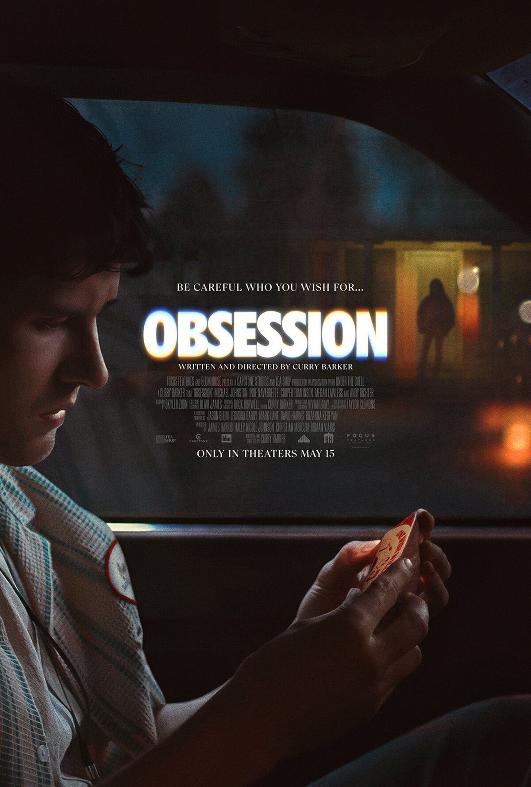
Obsession
2026
Dark and twisted, Obsession flips the script of domestic violence back on to
men. This already tightly crafted film is elevated by a perfectly horrifying
performance by Inde Navarrette.
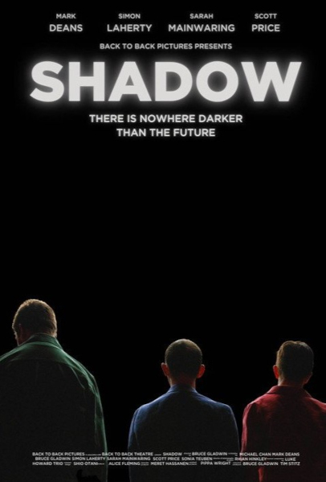
Shadow
2022
It all revolves around power. Three activists with intellectual disabilities hold
a town hall meeting about the impacts of AI that quickly unravels. Based on a
theatre show, Shadow builds layers of depth around how we treat others, and our
own self perception.
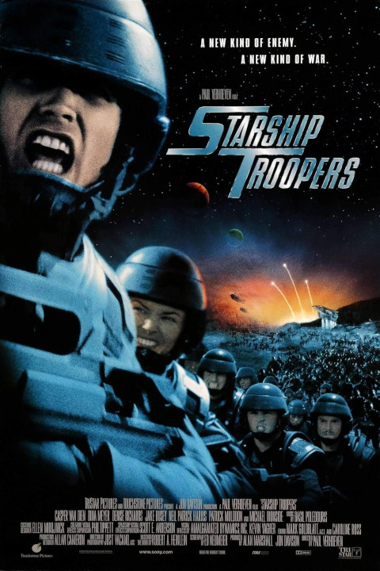
Starship Troopers
1997
Heroism looks uncomfortably similar to fascism. The film follows Johnny Rico as
they go from naive highschooler to complicit participant of a fictional military
society. Amongst heroic and brutal last stands, it's the details that reveal the
horror of this violent society.
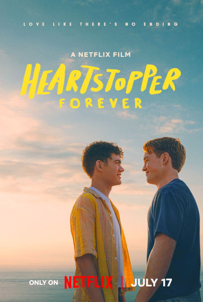
Hearstopper - Forever
2026
A Strikingly mature exploration of a single deeply felt relationship.
Approaching the end of high school, Nick and Charlie have to face the future of
their relationship, and their lives. The story is handled with notable
tenderness, depicted in naturalistic visuals that pop with glorious colour.
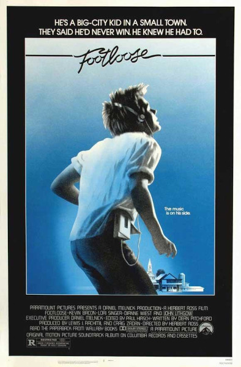
Footloose
1984
Is this the most 80s film? A big city boy newly arrived in a small town
fights against restrictive laws around dancing. It has a surprising focus on
grass roots activism, a generation fighting for themselves, and takes the
time to explore inter-generational conflict.

the Girl with the Dragon Tattoo
2011
A dark and confronting film. Yet for all it's intense scenes and complex
plot it still follows a conventional "Investigator chases serial killer"
structure. Rooney Mara as Lisbeth is a perfect mad c*nt (endearing).
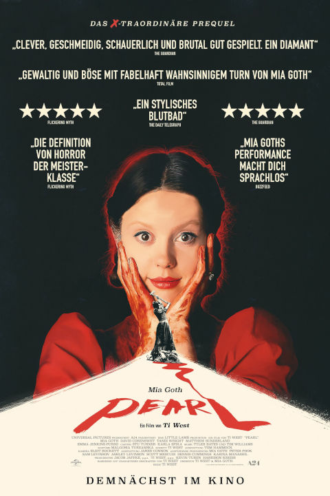
Pearl
2022
Mia Goth is 100% ready to get her freak on. Pearl is a deep character
study that's always ready to be swept up in Pearls imagination. Her self
actualisation is tightly wound into a descent to madness. There's so much
dark humor in here, with scenarios that would be comedic if they weren't
so emotionally raw.

Love192
2025
This is a beautiful short film. Video games spaces are weird, and become
extra weird when shared with other people. Love192 gets that, and what
these online relationships mean to those involved.

'the' Suicide Squad
2021
They made a film for mainstream American audiences, where the America
is a bad guy, and mainstream audiences where okay with that. That says
something about a country but I'm not sure what, and I don't think the
film knows either. But they get the irony of 'Peacemaker' perfectly
right.
This film is fun, the chapter titles are delightful. It's trying too
hard to be cool and I don't want to like it as much as I do, but the
chaos is GOOD.

Stranger by the Lake
2013
This film finds a unique take on the common pairing of danger and desire.
It's premise and plot are simple, but this gives more space to ponder the
film's themes. Looking is not a passive act, and gay cruising grounds are
a ripe place to explore this.

Brazil
1985
This film is beautifully mad! Bonkers from start to finish, and with a
dark edge under it all. A strong warning on the dangers of
bureaucracy and fascist systems.

Edge of Seventeen
1998
Released in 1998 and set in 1984, this queer coming of age film takes
some unusually somber turns when compared with it's post 2000s
counterparts. Being queer was harder then, and it shows in the culture,
and this film.